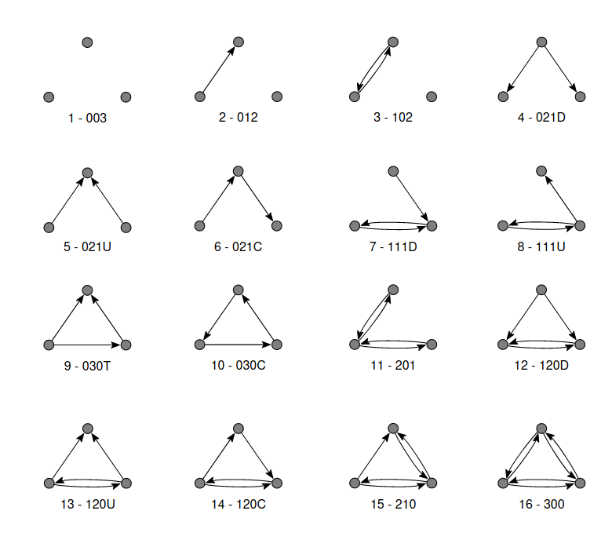

Specifying Exponential Random Graph Models
Triplet Subgraphs
Many of the pre-defined ERGMs are based on counting triplet subgraphs. In all of the pre-defined models, the sufficient statistics count induced triplet subgraphs. In the case of simple directed graphs, there are 16 isomorphism classes of triplet subgraphs, which are ordered as below:

Pre-defined Models
ergm.models.SimpleModel — TypeSimpleModel(number_of_nodes::Int, statistics::Vector{Function}, parameters::Vector{Float64})A naively implemented model over sparse directed graphs.
This model should not be used in practice but provides a reference implementation of the Model interface. This model calls the provided functions to compute sufficient statistics from scratch every time the statistics are queried rather than efficiently updating the statistics as the state is incrementally changed and caching them.
Arguments
number_of_nodes::Int: define the model on graphs of type SparseDirectedGraph{numberofnodes}statistics::Vector: a vector of functions, each of which takes aSparseDirectedGraphand returns the value of one of the sufficient statistics.parameters::Vector{Float64}: initial values of the natural parameters corresponding to each sufficient statistic.
ergm.models.DirectedSpatialTripletModel — TypeDirectedSpatialTripletModel(node_embedding::Matrix{Float64}, motif_radius::Float64)The sufficient statistics of this ERGM are the density of edges, the density of reciprocal edges, and the densities of the 13 connected triplet subgraphs in the same order as they are presented in the figure in the documentation page of specifying an ERGM. This makes for 15 parameters in total.
All edges and reciprocal edges are counted when computing the sufficient statistics, but only local connected triplet subgraphs are counted. Such a subgraph is considered local if the distance between all pairs of involved nodes is less than motif_radius. Note also that the same edge can be included in the edge density and reciprocal edge density statistics (as well as involved in connected triplets), but that any set of three nodes can be included in at most one of the connected triplet densities.
All densities are just total counts divided by the number of nodes in the graph, which is the appropriate scaling for large spatially local graphs.
Arguments
node_embedding::Matrix{Float64}: each row node_embedding[i, :] specifies the coordinates of the ith node in a Euclidean space.motif_radius::Float64: defines what connected triplet subgraphs are considered local, as described above.parameters::Vector{Float64}: natural paramters corresponding to each of the 15 sufficient statistics.
Custom Models
A model is a subtype M of the abstract type models.Model that implements the below interface. Models are also stateful, keeping track of one particular graph. This is useful for computing how the sufficient statistics change when making small changes to the underlying graph without having to recompute the statistics from scratch.
ergm.models.get_sample_space — Functionget_sample_space(model::Model)::AnyRetrieve the sample space over which the model is defined.
ergm.models.get_state — Functionget_state(model::Model)::AnyRetrieve the current model state.
ergm.models.set_state — Functionset_state(model::Model, state::Any)Set the model's state to a particular graph. This will throw away all saved information about the previous state and start computing sufficient statistics from scratch for the new state.
ergm.models.get_statistics — Functionget_statistics(model::Model)::Vector{Float64}Return a vector of the sufficient statistics of the current model state.
ergm.models.test_update — Functiontest_update(model::Model, index::Any, value::Any)::Vector{Float64}Compute the new sufficient statistics if we were to update one edge of the current state graph.
Note that this function does not actually change the model state, but returns the hypothetical new statistics if the edge with a given index is set to the given value
ergm.models.apply_update — Functionapply_update(model::Model, index::Any, value::Any)Apply an update the model state.
In contrast to test_update, this function will actually mutate the model state. This function does not return the new sufficient statistics, since they can now be computed using get_stats because the model state was updated.
ergm.models.get_parameters — Methodget_parameters(model::Model)::Vector{Float64}Retrieve the current natural parameters corresponding to each sufficient statistic.
ergm.models.set_parameters — Functionset_parameters(model::Model, parameters::Vector{Float64})Set the current natural parameters corresponding to each sufficient statistic.